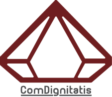
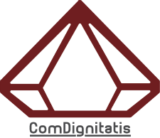

Comissão Organizadora
- Procuradoria-Geral da República
- Ordem dos Advogados
- Direção-Geral de Reinserção e Serviços Prisionais
- Comissão Nacional de Promoção dos Direitos e Proteção das Crianças e Jovens
- Instituto da Segurança Social, I.P.
- Santa Casa da Misericórdia de Lisboa
- Centro de Estudos Judiciários
- Centro de Direito da Família da Universidade de Coimbra
- Centro Interdisciplinar de Ciências Sociais da Universidade Nova de Lisboa (CICS.NOVA)
- Universidade Atlântica
- Cáritas Portuguesa
- Casa Pia de Lisboa
- CrescerSer - Associação Portuguesa para o Direito dos Menores e da Família
- ComDignitatis - Associação Portuguesa para a Promoção da Dignidade Humana

 

Programa
| 24 de Maio de 2018 | |
|---|---|
| 08h30 |
Receção dos Participantes |
| 09h00 |
Sessão de Abertura |
| 09h30 |
“Acesso à Justiça e Participação: os Desafios da Convenção dos Direitos da Criança” |
| 10h30 |
Pausa para Café |
| 11h00 |
“Aspetos Psicossociais da Prevenção da Delinquência Juvenil” |
| 12h45 |
Almoço livre |
| 14h15 |
“Prevenção da Delinquência Juvenil: Intervenção Situacional e Justiça Restaurativa” |
| 15h00 |
“Intervenção da Justiça Juvenil” |
| 15h30 |
Pausa para Café |
| 15h45 |
“Interface do Sistema de Promoção e Proteção com o Sistema de Justiça Juvenil” |
| 16h30 |
“O papel das Magistraturas no Sistema de Justiça Juvenil” |
| 17h00 |
Encerramento dos Trabalhos |
| 25 de Maio de 2018 | |
|---|---|
| 08h30 |
Receção dos Participantes |
| 09h00 |
Sessões Paralelas “Prevenção da Delinquência Juvenil e os Princípios da Justiça Amiga" “Sociedade, Comunicação social e Prevenção Situacional” “Interface entre Sistema de Proteção e o Sistema de Justiça Juvenil – o Papel das Magistraturas” “O Acesso à Justiça e a Participação da Criança” “Resolução Extrajudicial de Conflitos” |
| 11h00 |
Pausa para Café |
| 11h30 |
Continuação dos trabalhos |
| 12h30 |
Almoço Livre |
| 14h00 |
Momento Cultural |
| 14h30 |
Apresentação das Conclusões das Sessões Paralelas |
| 16h00 |
Pausa para Café |
| 16h15 |
“Le Juge des Enfants: un Juge Mineur? Débat entre Sécurité Publique et Intérêt de L’Enfant et la Place de sa Parole” |
| 17h00 |
Encerramento dos trabalhos |
Sessões de dia 24 de Maio
| 24 de Maio de 2018 | |
|---|---|
| 08h30 |
Receção dos Participantes |
| 09h00 |
Sessão de Abertura |
| 09h30 |
“Acesso à Justiça e Participação: os Desafios da Convenção dos Direitos da Criança” |
| 10h30 |
Pausa para Café |
| 11h00 |
“Aspetos Psicossociais da Prevenção da Delinquência Juvenil” |
| 12h45 |
Almoço livre |
| 14h15 |
“Prevenção da Delinquência Juvenil: Intervenção Situacional e Justiça Restaurativa” |
| 15h00 |
“Intervenção da Justiça Juvenil” |
| 15h30 |
Pausa para Café |
| 15h45 |
“Interface do Sistema de Promoção e Proteção com o Sistema de Justiça Juvenil” |
| 16h30 |
“O papel das Magistraturas no Sistema de Justiça Juvenil” |
| 17h00 |
Encerramento dos Trabalhos |
“Acesso à Justiça e Participação: os Desafios da Convenção dos Direitos da Criança”
Presidente da Mesa
Rosa Clemente
Centro de Direito da Família da Universidade de Coimbra
Marta Santos Pais
Representante Especial do Secretário-Geral das Nações Unidas sobre a Violência contra Crianças“Participação da Criança nas Decisões que lhe Dizem Respeito”
Rosa Martins
Faculdade de Direito de Coimbra
“Aspetos Psicossociais da Prevenção da Delinquência Juvenil”
Presidente da Mesa
Edmundo Martinho
Provedor da SCML
Josefina Castro
Faculdade de Direito da Universidade do Porto“A Intervenção da Comunidade e das Organizações na Prevenção da Delinquência Juvenil”
Presidente da Mesa
A indicar pela Casa Pia Lisboa
Provedor da SCML
Katia Almeida
Pressley Ridge“Prevenção da Delinquência Juvenil: Intervenção Situacional e Justiça Restaurativa”
Presidente da Mesa
Guilherme de Oliveira
Centro de Direito da Família da Universidade de Coimbra
Benjamin Sayous
Crimonólogo, Professor Doutor em Direito Penal – Universidade de Pau, França e Presidente do Institut Français pour la Justice Restaurative“Intervenção da Justiça Juvenil”
Presidente da Mesa
Celso Manata
Diretor-Geral de Reinserção e Serviços Prisionais
Maria João Leote de Carvalho
Investigadora“Interface do Sistema de Promoção e Proteção com o Sistema de Justiça Juvenil”
Presidente da Mesa
Guilherme Figueiredo
Bastonário da Ordem dos Advogados
João Cóias
Direção-Geral de Reinserção e Serviços Prisionais
Sandra Alves
Instituto da Segurança Social, IP“O papel das Magistraturas no Sistema de Justiça Juvenil”
Presidente da Mesa
Laborinho Lúcio
Juiz Conselheiro Jubilado
Rui do Carmo
Procurador-Geral Adjunto